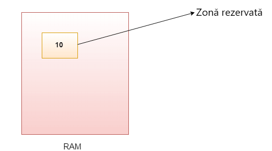

Variabile în Java

O variabilă este un container care deține valoarea în timp ce programul Java este executat. O variabilă este
alocată cu un tip de date.
Variabila este un nume al locației de memorie. Există trei tipuri de variabile în java: locală, instanță și
statică.
Există două tipuri de tipuri de date în Java:
- primitiv
- neprimitiv
int data = 10;
//am declarat o variabila
Tipuri de variabile
Există trei tipuri de variabile în Java:
- variabilă locală
- variabilă Instanță
- variabilă statică
1) Variabilă Locală
O variabilă declarată în corpul metodei se numește variabilă locală. Puteți utiliza această variabilă numai
în cadrul acelei metode, iar celelalte metode din clasă nici măcar nu știu că variabila există.
O variabilă locală nu poate fi definită cu cuvântul cheie „static”.
2) Variabilă instanță
O variabilă declarată în interiorul clasei, dar în afara corpului metodei, se numește variabilă de instanță.
Nu este declarat static.
Se numește variabilă de instanță, deoarece valoarea sa este specifică instanței și nu este partajată între
instanțe.
3) Variabilă Statică
O variabilă declarată statică se numește variabilă statică. Nu poate fi locală. Puteți crea o singură copie
a
variabilei statice și o puteți partaja între toate instanțele clasei. Alocarea memoriei pentru variabilele
statice are loc o singură dată când clasa este încărcată în memorie.
A.java
public class A{
static int a = 100;//variabilă statică
void method(){
int b = 90;//variabilă locală
}
public static void main(String args[]){
int c = 80;//variabilă instanță
}
}
Exemplu: suma a două numere
Simple.java
public class Simple{
public static void main(String args[]){
int a = 10;
int b = 10;
int c = a + b;
System.out.println(c);
}
}
Afișare:
20